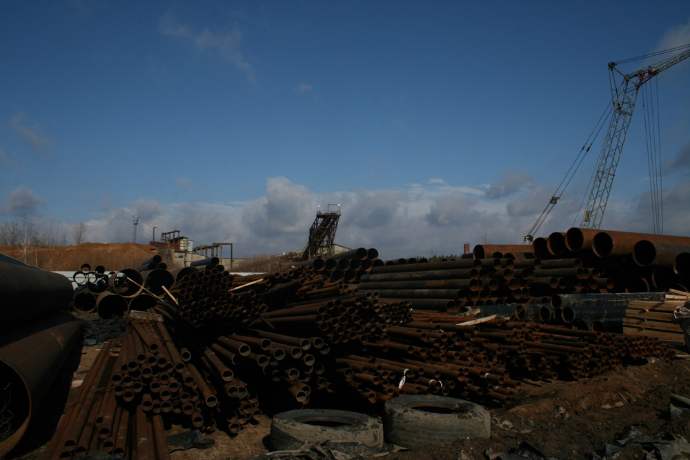
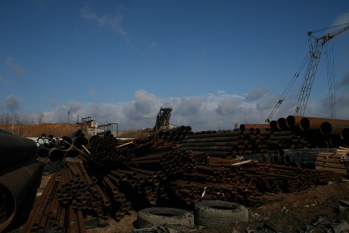

Мы успешно работаем уже более 17 лет. У нас большой выбор стальных труб как б/у так и новых,
всегда готовых к
отгрузке.
Наши преимущества
- Наша компания занимается продажей стальных труб с 2000 года.
- Наш богатый опыт и возможности позволяют нам доставлять до 1000 тонн в месяц грузовыми автомобилями и до 3000 тонн железной дорогой.
- Мы напрямую сотрудничаем с перевозчиками, что позволяет предлагать самые лучшие цены и кратчайшие сроки доставки (в течение 5-7 рабочих дней с даты заказа).
Наши возможности
- Большой склад который вмещает более 1500 тонн стальных труб.
- Наши поставщики - российские нефтегазовые компании.
- Склад в Вильнюсе с новыми стальными трубами 2А (второй сорт) производства России, СНГ и ЕС.